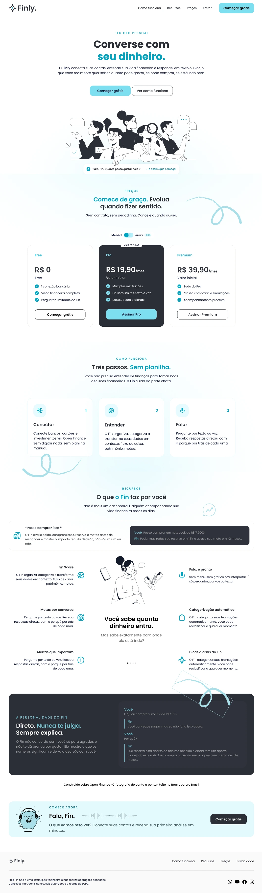
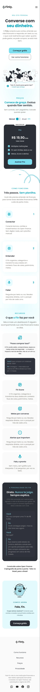

Seu dinheiro.
Uma boa conversa.
Uma proposta de assistente financeiro que coloca a conversa no centro da experiência. Do primeiro contato no site à interação por texto e voz no aplicativo.
Menos distância
entre perguntar
e entender.
O panorama financeiro convive com uma forma direta de interação: perguntar ao Fin.
Explore as interfaces ↓

Finanças em uma
linguagem próxima.
A proposta apresentada nas telas é aproximar informação financeira de perguntas cotidianas. Quanto posso gastar? Como estão minhas metas? Qual o impacto de uma compra? O projeto explora texto e voz como portas de entrada para essas interações.
Na interface, saldo, compromissos e objetivos oferecem contexto para a conversa. O case apresenta a concepção visual e os fluxos disponíveis no arquivo, sem atribuir ao produto funcionalidades em produção ou resultados de uso.

Antes de usar,
compreender.
O onboarding usa ilustrações, mensagens curtas e progressão em etapas para apresentar o papel do assistente. Em seguida, o fluxo pergunta sobre objetivos e instituições financeiras.
A linguagem visual combina superfícies claras, ilustrações em preto e branco e acentos em ciano. Algumas telas do arquivo usam a assinatura Finly; as imagens deste case mantêm essa versão original.
Uma proposta.
Diferentes pontos de contato.
Uma visão de saldo, compromissos, alertas e metas.

Informações organizadas para consultar as contas.

Objetivos apresentados com acompanhamento de progresso.
Telas do projeto. Role dentro de cada apresentação para explorar o conteúdo.

Site desktop: apresentação da proposta, planos, funcionamento e recursos. Role para explorar a página.

Versão mobile do site de apresentação. Esta é uma experiência distinta do aplicativo.
O convite é simples:
“Fala, Fin.”
A tela de conversa dá destaque ao campo de mensagem e ao microfone. Perguntas sugeridas ajudam a iniciar a interação. Na navegação inferior, Falar aparece junto de Hoje, Finanças, Metas e Meu Fin.
O site explica a proposta antes do uso. O aplicativo apresenta os dados e os pontos de interação. Juntos, os dois materiais permitem observar como uma mesma ideia se expressa na comunicação e na interface.